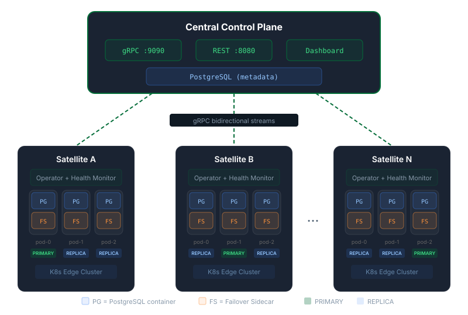
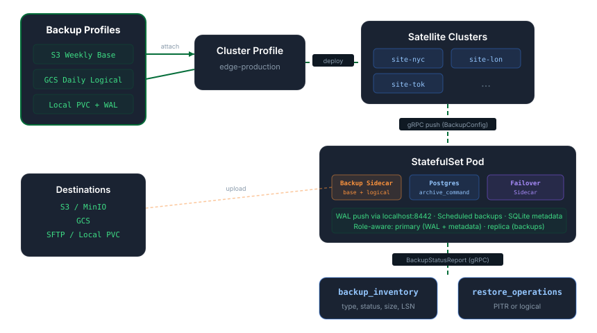

Centralized management for PostgreSQL High Availability clusters across 100s of edge Kubernetes clusters. Automatic failover, split-brain prevention, and deep observability from a single dashboard.
You can't reach them directly. Traditional push-based management doesn't work.
A round-trip to a central control plane during a primary failure adds unacceptable latency.
Two primaries writing to the same cluster corrupts data permanently.
Managing hundreds of PG clusters across edge sites with kubectl is impossible.
Satellites connect outward via persistent gRPC streams. No inbound access required.
Leader election via K8s Leases. Promotion in seconds with no central dependency.
Immediate write blocking, automatic pg_rewind, zero-restart container recovery.
Web dashboard with real-time health, replication lag, slow queries, and one-click switchover.
Everything you need to run PostgreSQL HA at the edge, built from scratch in Go.
Per-pod sidecar with Kubernetes Lease-based leader election. Primary failure detected in 15 seconds, promotion in under 5.
SQL fencing blocks writes and kills connections instantly. Old primary auto-demotes to standby via K8s exec. No data corruption.
After failover, replicas auto-detect timeline divergence and recover via pg_rewind or re-basebackup. No manual intervention.
Replication lag, connections, disk, WAL stats, per-database cache hit ratios, table stats, and slow queries from pg_stat_statements.
One-click primary promotion from the dashboard. CHECKPOINT, fence, lease transfer, promote - with step-by-step confirmation.
Reusable cluster templates with deployment rules that auto-deploy to satellites matching label selectors. Fleet-scale management.
Schedule physical and logical backups to S3, GCS, SFTP, or local PVC. Multiple rules per profile with automatic WAL archiving and PITR.
Builds StatefulSets, Services, ConfigMaps, Secrets, and RBAC from scratch. No CRDs, no operator frameworks, minimal footprint.
Token-based auth with SHA-256 hashing. Constant-time comparison. Create-only secrets. Identity stored in K8s Secrets.
Postgres container runs in a supervisor loop. Demotion, timeline recovery, and restart happen in-place without K8s restart counts.
Three Go binaries. Bidirectional gRPC streaming. No external dependencies beyond PostgreSQL.

cmd/central
gRPC server for satellite streams. REST API with 30+ endpoints. Embedded React dashboard. PostgreSQL metadata store with auto-migrations.
cmd/satellite
Lightweight agent per edge cluster. Persistent gRPC stream with auto-reconnection. Kubernetes operator that builds PG clusters from JSON configs.
cmd/failover-sidecar
Per-pod sidecar for leader election via K8s Leases. Detects split-brain, fences writes, demotes old primary, recovers timeline divergence.
From primary failure to full recovery in under 20 seconds, with zero manual intervention.
The primary pod crashes or becomes unreachable. The failover sidecar's lease renewal stops.
After 15 seconds without renewal, the leader lease expires. All replica sidecars detect this on their next tick.
One replica wins the lease via optimistic locking (resourceVersion). The others see the conflict and back off.
The winning replica calls pg_promote(), transitions to primary, and labels its pod pg-swarm.io/role=primary.
The Kubernetes RW Service selector picks up the new primary label. Applications reconnect transparently.
Other replicas detect the timeline divergence, run pg_rewind (or re-basebackup), and start streaming from the new primary. No container restarts.
Managed backups driven by reusable rules. Multiple rules per profile, automatic CronJobs, point-in-time recovery.

Independent, reusable configurations that define what to back up (physical, logical, or both), where (S3, GCS, SFTP, local PVC), and how long to retain.
Attach multiple backup profiles to a single profile. Back up to S3 for offsite disaster recovery and a local PVC for fast restores simultaneously.
Backups run as Kubernetes CronJobs, not sidecars. Attach/detach rules with zero impact on running PostgreSQL pods. No rolling restarts.
When WAL archiving is enabled on a rule, the operator automatically sets archive_mode, archive_command, and archive_timeout in postgresql.conf.
Restore to any point in time from the dashboard. Select a base backup and target timestamp. The satellite handles StatefulSet scaling and recovery setup.
Every backup is tracked in a central inventory with status, size, WAL LSN range, and PG version. Status flows from satellites via gRPC in real time.
s3 / gcs / sftp / local
S3 and S3-compatible (MinIO), Google Cloud Storage, SFTP servers, or local PersistentVolumeClaims on the satellite cluster.
pg-swarm-backup:latest
Alpine-based image with PG 16/17/18 client tools, aws-cli, rclone, and kubectl. Auto-selects the right PG version at runtime.
count + days
Configurable retention per rule: base backup count, WAL retention days, and logical backup count. Enforced automatically after each backup.
Real-time visibility into every PostgreSQL instance across your fleet.
Instance table with role badges, ready/WAL status dots, connection bars, disk usage, and timeline IDs. Expand to see per-pod details.
Drill down to see disk vs WAL breakdown, WAL statistics, per-database sizes with cache hit ratios, table stats, and slow queries.
6-tab configuration editor: General, Volumes, Resources, PostgreSQL params (full catalog with 50+ parameters), HBA Rules, and Databases.
Map profiles to satellites via label selectors. When a rule matches, clusters are auto-created and pushed. Fleet-scale management.
Promote any replica to primary with a detailed confirmation modal showing each step and a downtime warning.
Create and manage backup profiles with physical/logical schedules, destination config, and retention policies. Attach multiple rules per profile.
View all backups per cluster with status, size, and WAL range. Initiate point-in-time or logical restores directly from the cluster detail page.
State transitions, failovers, switchovers, backup completions, and errors with severity icons. Per-cluster event filtering.
Get pg-swarm running locally in under a minute.
make build # Compile all binaries
make test # Run unit tests
make lint # golangci-lintmake minikube-build-all
make k8s-deploy-all
make k8s-status# Push images to your registry
DOCKER_REPO=your.registry/pg-swarm make docker-push-all
# Deploy central (with metadata PG)
kubectl apply -k deploy/k8s/central/base/
# Deploy satellite per edge cluster — edit configmap to set CENTRAL_ADDR, K8S_CLUSTER_NAME, and REGION
kubectl apply -k deploy/k8s/satellite/base/
# Or create a custom kustomize overlay: deploy/k8s/satellite/overlays/prod/kustomization.yaml